Gemeinschaft Chara · Lobpreis
AmbientPad Live
Kurzanleitung für iPhone & iPad
Teppich-Sounds (Pads) in allen 12 Tonarten, per Fingertipp oder Fußpedal, auf Wunsch direkt nach der Setlist aus Planning Center. Die gemeinsamen Team-Pads liegen in SharePoint und kommen mit einem Tipp aufs Gerät. Danach laufen sie auch ohne Internet.
Zum Blättern wischen, die Pfeile unten antippen oder die Pfeiltasten benutzen. Ca. 10 Minuten.
Überblick
Was die App kann
- 12 Kacheln = 12 Tonarten. Antippen startet das Pad als endlose, nahtlose Schleife.
- Weiche Übergänge. Eine andere Tonart wird sanft übergeblendet. Tippst du dieselbe Tonart noch einmal, blendet das Pad aus.
- Mehrere Sound-Sets. Warm und Shimmer sind schon dabei. Dazu kommen die Team-Pads aus SharePoint und auf Wunsch eigene Pads aus deinem OneDrive.
- Offline. Was einmal geladen ist, spielt auch im Flugmodus.
- Fußpedal. Mit einem Bluetooth-Umblätterpedal (z. B. Tavsou) bleiben beide Hände am Instrument.
- Klick & zweites Pedal. Metronom nur als Anzeige oder getrennt fürs In-Ear, dazu ein zweites Pedal für Klang und Klick.
- Setlist aus Planning Center. Lieder und Tonarten kommen direkt aus eurem Plan, das Pedal klickt von Lied zu Lied.
iPhone oder iPad mit Safari, dein Gemeindekonto vorname.nachname@chara.church und für den Gottesdienst einen Lautsprecher oder ein Kabel zum Mischpult.
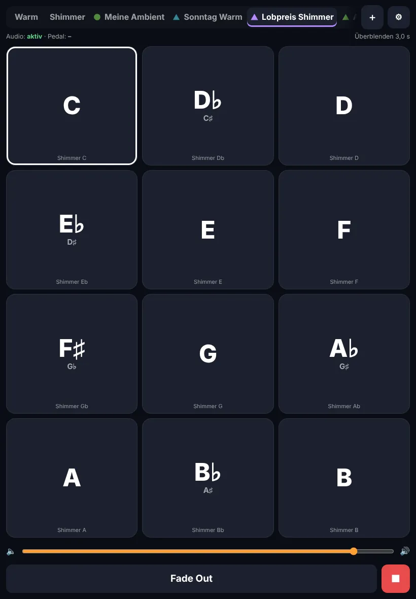
Schritt 1
App installieren
Die App kommt nicht aus dem App Store. Du legst sie über Safari auf den Home-Bildschirm. Das dauert eine Minute und kostet nichts.
- Öffne Safari (nicht Chrome) und rufe diese Adresse auf:
olivergentina.github.io/ambientpad - Tippe auf das Teilen-Symbol . Am iPhone ist es unten, am iPad oben rechts.
- Scrolle nach unten und wähle Zum Home-Bildschirm.
- Tippe oben rechts auf Hinzufügen.
- Starte die App ab jetzt immer über das neue Symbol AmbientPad auf dem Home-Bildschirm.
Öffne die App über das Symbol auf dem Home-Bildschirm und nicht im Safari-Tab. Nur so bleiben deine Pads dauerhaft gespeichert.
Technisch ist das eine „Web-App“. Sie verhält sich wie eine normale App: eigenes Symbol, Vollbild und offline nutzbar. Updates kommen automatisch, sobald du online bist.
Du kannst die App auf iPhone und iPad installieren. Jedes Gerät lädt seine Pads selbst.
Schritt 2
Erster Start: „Start“ antippen
Beim Öffnen siehst du einen großen Knopf 🔊 Start. iPhone und iPad erlauben Ton erst nach einem Fingertipp. Deshalb kommt dieser Knopf bei jedem App-Start.
Beim allerersten Start speichert die App die mitgelieferten Sets Warm und Shimmer. Oben erscheint kurz „Alle Standard-Pads sind jetzt offline verfügbar ✓“.
Lauter stellen und prüfen, ob ein Bluetooth-Gerät verbunden ist. Die App spielt auch, wenn der Stummschalter an ist.
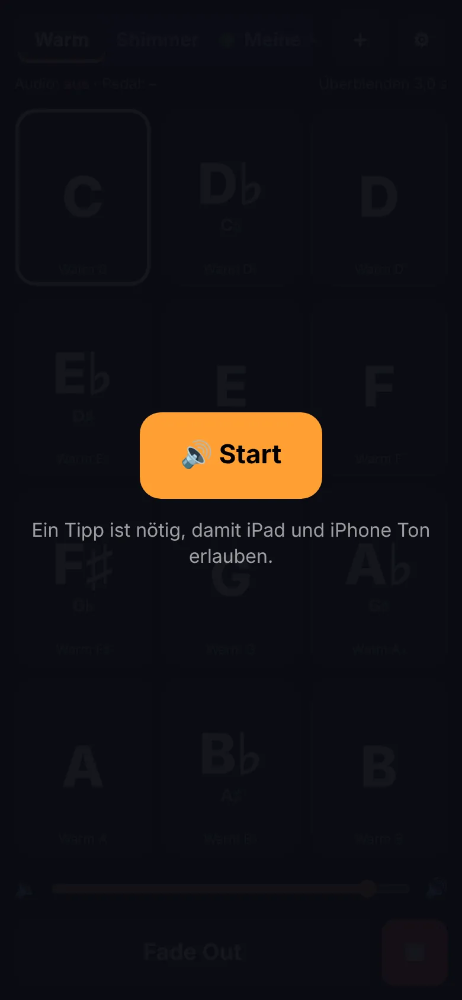
Grundlagen
Pads spielen
| Du tippst … | Das passiert |
|---|---|
| eine Tonart, z. B. G | Das Pad blendet weich ein und läuft als Schleife. Die Kachel leuchtet. |
| dieselbe Tonart noch einmal | Das Pad blendet langsam aus. |
| eine andere Tonart | Sanfte Überblendung in die neue Tonart. |
| Fade Out | Alles blendet langsam aus, z. B. am Ende eines Songs. |
| ■ | Sofort-Stopp, nur für den Notfall. |
Mit dem Regler über den Knöpfen stellst du die Lautstärke der App ein.
Kacheln mit zwei Namen sind dieselbe Tonart: D♭ = C♯, E♭ = D♯, F♯ = G♭, A♭ = G♯, B♭ = A♯.
Halte eine Kachel gedrückt und tippe auf Datei wählen …. Das geht nur in Warm und Shimmer. Team-Sets kommen immer aus SharePoint.
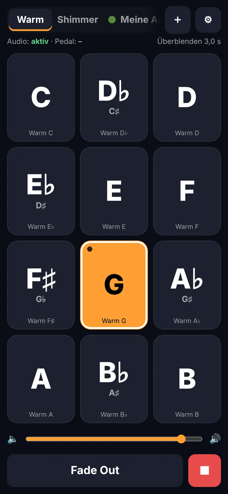
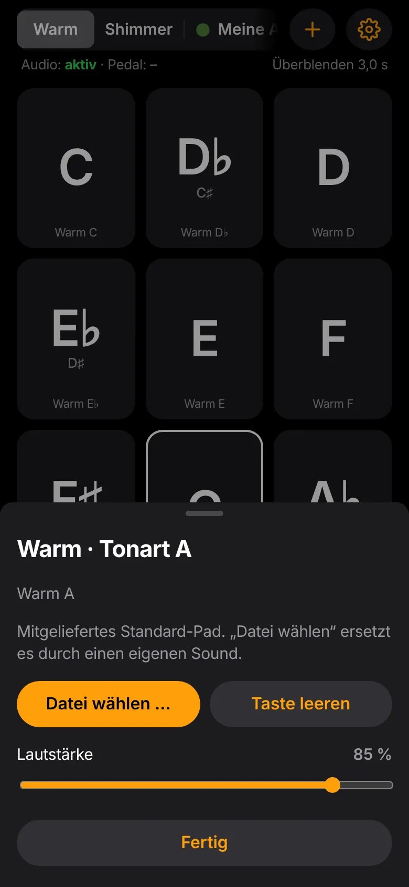
Grundlagen
Zwischen Sets wechseln
Oben in der Leiste stehen die Sound-Sets. Ein Tipp wechselt das Set. Die Farbe des Strichs unter dem gewählten Set findest du auch an den Kacheln wieder.
- Warm, Shimmer: mitgeliefert, ohne Symbol
- ▲ Team-Sets aus dem gemeinsamen SharePoint-Ordner Team
- ● eigene Sets aus deinem OneDrive (optional)
Bei vielen Sets wischst du die Leiste seitlich. Ein weicher Rand zeigt, dass es weitergeht.
Symbole und Anzeige kannst du selbst wählen, siehe Seite „Aussehen & Reihenfolge“.
Läuft gerade ein Pad, blendet die App beim Set-Wechsel sofort in dieselbe Tonart im neuen Set über. So wechselst du mitten im Song den Klang, ohne Pause.
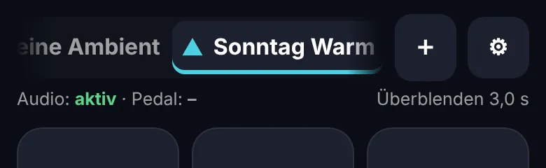
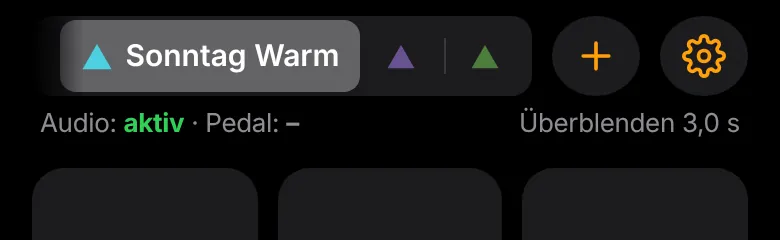
Schritt 3 · Team-Pads
Mit dem Gemeindekonto anmelden
Für die Team-Pads meldest du dich einmal bei Microsoft an. Dein Konto lautet immer:
vorname.nachname@chara.church
- Tippe oben rechts auf ⚙︎ und dann auf 👥 Team-Pads.
- Tippe auf Team-Ordner durchsuchen. Die Microsoft-Anmeldeseite öffnet sich.
- Gib vorname.nachname@chara.church und dein Passwort ein. Je nach Einstellung folgt die Bestätigung per Authenticator-App oder SMS.
- Fragt Microsoft „Angemeldet bleiben?“, tippe auf Ja.
- Du landest automatisch wieder in der App. Tippe auf 🔊 Start, dann geht es mit der Auswahl weiter.
Microsoft erlaubt Web-Apps eine Anmeldung von höchstens 24 Stunden. Danach meldest du dich beim nächsten Durchsuchen einfach neu an. Deine Pads bleiben auf dem Gerät und spielen auch ohne Anmeldung.
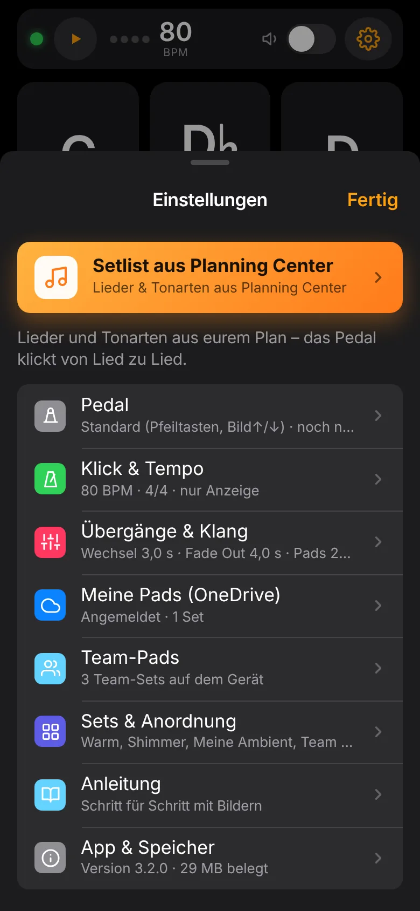
Schritt 4 · Team-Pads
Team-Pads aufs Gerät holen
Der Team-Ordner 02_Worship Pads ist schon fest eingetragen. Du musst keinen Link einfügen.
- ⚙︎ → 👥 Team-Pads → Team-Ordner durchsuchen
- Die App zeigt alle Team-Sets mit Anzahl der Pads und Größe. Hake die gewünschten an oder tippe auf Alle auswählen.
- Tippe auf Hinzufügen. Die Pads werden geladen und die Anzeige zählt mit.
- Fertig: Die Sets erscheinen oben in der Leiste mit ▲.
Ein Set hat je nach Qualität 30–60 MB. Lade die Sets zu Hause oder im Gemeinde-WLAN, nicht kurz vor dem Gottesdienst über Mobilfunk.
„bereits auf diesem Gerät“ heißt, das Set ist schon da. „keine Pads mit erkennbarer Tonart“ heißt, im Ordner liegt nichts Passendes.
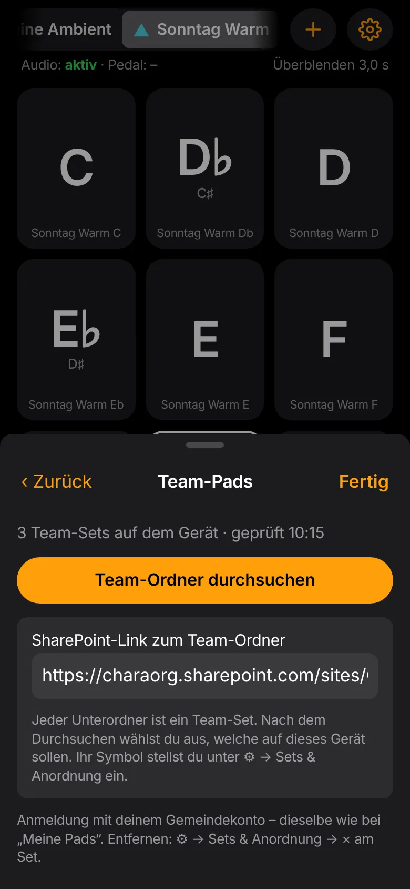
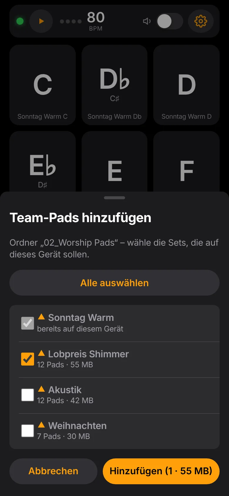
Team-Pads
Aktuell halten, nachladen, entfernen
Automatische Updates
Bist du angemeldet und online, prüft die App beim Start, ob sich in deinen Team-Sets etwas geändert hat. Dann erscheint „Neue Pads verfügbar“ mit einer Liste. Tippe auf Jetzt laden oder auf Später.
Spielt gerade ein Pad, stört die App nicht. Es erscheint nur ein kleiner Punkt am ⚙︎-Knopf.
Neue Team-Sets
Neue Ordner im Team-Ordner werden nicht automatisch geladen. Die App meldet nur „weitere Team-Sets verfügbar“. Hinzufügen kannst du sie wie auf der vorigen Seite.
Set entfernen
⚙︎ → Sets & Anordnung → Kacheln & Sets anordnen und dann auf das × am Set tippen. Das Set wird vom Gerät gelöscht, in SharePoint bleibt es erhalten. Über „Team-Ordner durchsuchen“ holst du es jederzeit wieder.
Die App liest im Team-Ordner nur. Du kannst dort mit der App nichts verändern oder löschen.
Optional
Mit dem Fußpedal steuern
Geeignet ist ein Bluetooth-Umblätterpedal mit zwei Tasten, z. B. von Tavsou.
Einmalig koppeln
- Stelle das Pedal auf den Modus mit Pfeiltasten oder Bild↑/Bild↓ (siehe Anleitung des Pedals) und schalte den Repeat-Modus aus.
- iPhone/iPad: Einstellungen → Bluetooth → Pedal antippen.
- In der App: ⚙︎ → 🦶 Pedal → Pedal lernen. Folge der Anzeige: links kurz, rechts kurz, dann links etwa 2 Sekunden halten.
Belegung
| kurz | lang | |
|---|---|---|
| Links | nächste Tonart | Tonart zurück |
| Rechts | Start / Stopp | alles ausblenden |
Manche Pedale melden langes Drücken nicht. Die App merkt das beim Lernen und stellt um: links doppelt tippen = zurück, beide Tasten gleichzeitig = alles ausblenden.
Solange ein Pedal verbunden ist, blendet iOS die Tastatur in anderen Apps aus. Bluetooth am Pedal aus- und wieder einschalten hilft.
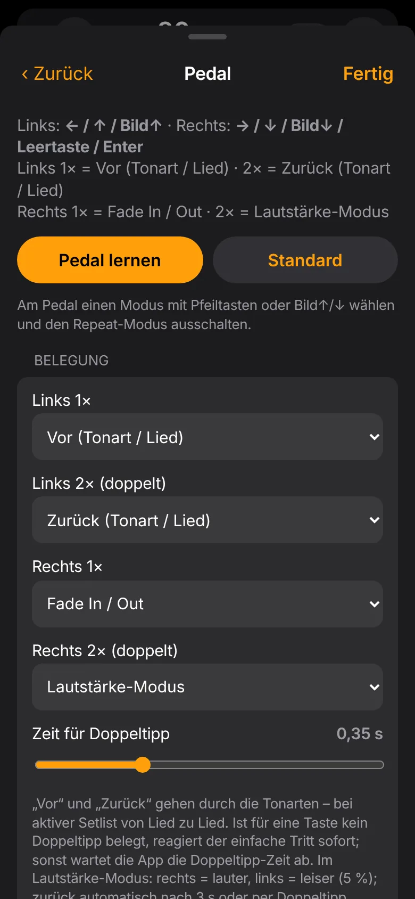
Planning Center neu
Setlist aus Planning Center
Die App holt die Lieder mit ihren Tonarten aus Planning Center Services. Du klickst sie dann mit dem Pedal der Reihe nach durch.
- ⚙︎ → oben der orange Knopf 🎵 Setlist aus Planning Center → Setlist aus Planning Center laden.
- Beim ersten Mal meldest du dich mit deinem Planning-Center-Konto an und erlaubst den Zugriff. Danach geht es zurück in die App, dort 🔊 Start tippen.
- Wähle eine der kommenden Veranstaltungen oder füge einen Link zum Plan ein, z. B.
services.planningcenteronline.com/plans/…, und tippe auf Laden. - Über den Kacheln erscheint die Setlist-Leiste mit dem aktuellen Lied, seiner Tonart und dem nächsten Lied. Die passende Kachel ist schon ausgewählt.
Pedal im Setlist-Modus
| kurz | lang | |
|---|---|---|
| Links | nächstes Lied (ein laufendes Pad blendet direkt über) | Lied zurück |
| Rechts | Pad Start / Stopp | alles ausblenden |
Ohne Pedal blätterst du mit ‹ › in der Leiste. Ein Tipp auf die Leiste öffnet die ganze Liste, und ein Tipp auf ein Lied springt direkt dorthin.
So liest die App die Tonarten
- Moll spielt das Pad der Paralleldur: Em → G, Am → C, F♯m → A.
- Bei Modulation („D – E“) zählt die erste Tonart.
- Lieder ohne Tonart stehen grau in der Liste und werden beim Blättern übersprungen.
In der Liste oben auf ↻ Aktualisieren tippen. Andere Setlist lädt einen anderen Plan, Modus aus schaltet das Pedal wieder auf alle 12 Tonarten.
Die geladene Setlist bleibt auf dem Gerät und funktioniert auch ohne Internet. Die Anmeldung bei Planning Center hält bis zu 90 Tage.
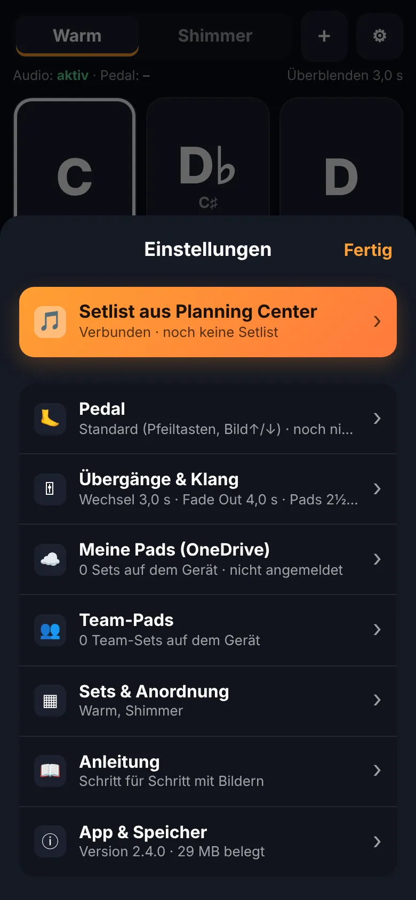
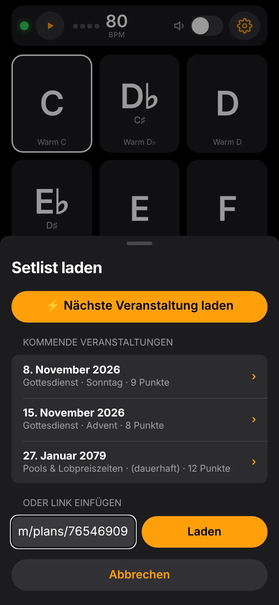
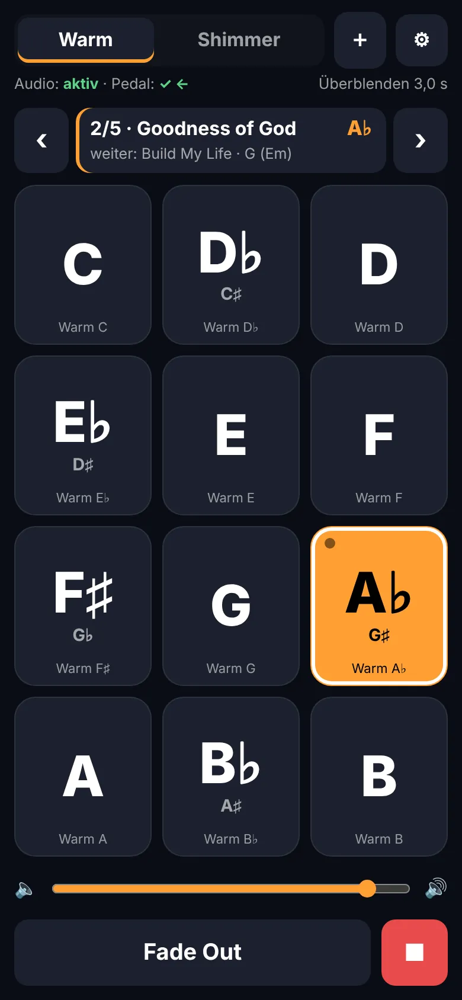
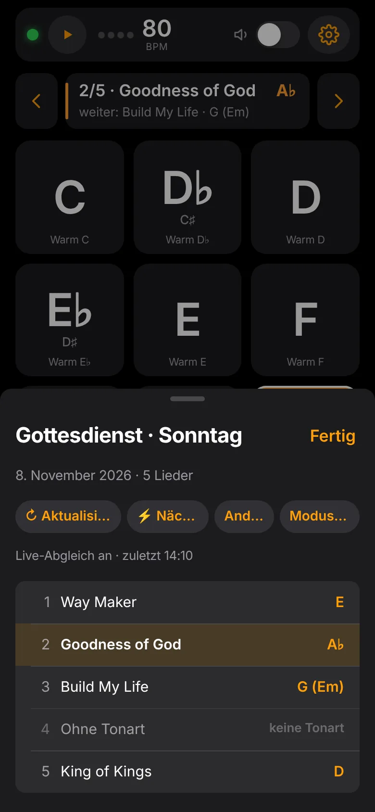
Optional neu
Klick & zweites Pedal
Der Klick
Oben rechts zeigt die App Tempo und Takt, z. B. ● ○ ○ ○ 72 BPM. Ein Tipp darauf startet oder stoppt den Klick. Die Eins leuchtet orange.
Einstellungen unter ⚙︎ → ♩ Klick & Tempo: Tempo mit − / + oder Tap, Taktart, Einzähler (1 oder 2 Takte).
| Ausgabe | Wofür |
|---|---|
| Nur Anzeige | Kein Ton, der Takt blinkt nur als Symbol. Ideal, wenn niemand einen Klick im Ohr braucht. |
| Split | Pad auf einem Kanal, Klick auf dem anderen (jeweils mono). Mit einem Y-Kabel (Stereo-Klinke → 2× Mono) geht ein Kanal ans Mischpult für die Gemeinde, der andere ins In-Ear der Band. Kanäle sind tauschbar. |
| Gemischt | Klick zusammen mit dem Pad auf beiden Kanälen, z. B. zum Üben mit Kopfhörer. |
Bluetooth verzögert den Ton um bis zu 0,3 Sekunden. Für einen Klick ist das zu ungenau, und iOS kann nicht auf zwei Bluetooth-Geräte gleichzeitig ausgeben. Für den Split also ein Kabel oder ein USB-Audio-Interface verwenden.
Ist im Arrangement eines Lieds ein Tempo (BPM) und eine Taktart hinterlegt, übernimmt der Klick sie beim Liedwechsel in der Setlist automatisch. Das Tempo steht dann auch in der Setlist-Leiste.
Zweites Pedal
Koppel beide Pedale in den iOS-Einstellungen unter Bluetooth. Pedal 2 muss andere Tasten senden als Pedal 1, also an Pedal 2 einen anderen Modus wählen, z. B. Bild↑/↓. Dann ⚙︎ → 🦶 Pedal → Pedal 2 lernen.
| Pedal 2 | kurz | lang |
|---|---|---|
| Links | nächstes Set (Klang) | Set zurück |
| Rechts | Klick an / aus | Einzähler, danach läuft der Klick weiter |
Ein Set-Wechsel blendet die laufende Tonart direkt in den neuen Klang über. Meldet das Pedal kein langes Drücken, gilt: doppelt tippen = lange Funktion.
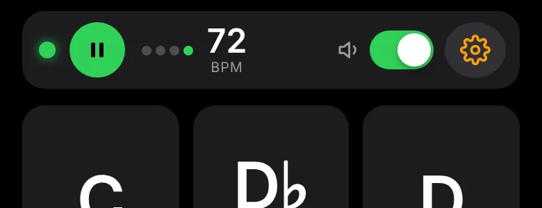
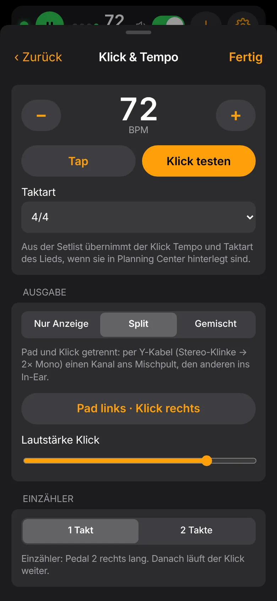
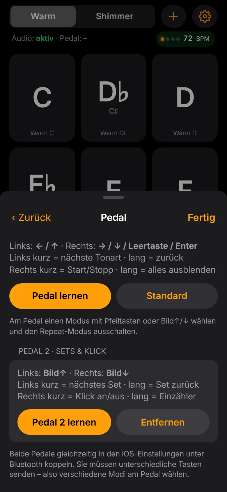
Optional
Eigene Pads aus deinem OneDrive
Hast du eigene Pad-Sounds, legst du sie in dein persönliches OneDrive. Sie erscheinen dann mit ● in der Leiste und nur auf deinen Geräten.
- Lege in deinem OneDrive (Gemeindekonto) ganz oben den Ordner
Meine Padsan. - Darin für jedes Set einen Unterordner, z. B.
Meine Pads/Ambient. Der Ordnername wird der Set-Name. - Lege die Dateien hinein. Die Tonart muss im Dateinamen stehen, siehe unten.
- In der App: ⚙︎ → ☁️ Meine Pads → Nach neuen Pads suchen → Jetzt laden.
So erkennt die App die Tonart
| Dateiname | wird zu |
|---|---|
Key of A Pads.mp3 | A |
01 - Bb.mp3 | B♭ |
Pad F#.wav / Pad F sharp.wav | F♯ |
Intro.mp3 | übersprungen, keine Tonart |
Kein Problem. Hast du keinen Ordner „Meine Pads“, nutzt du einfach nur die Team-Pads.
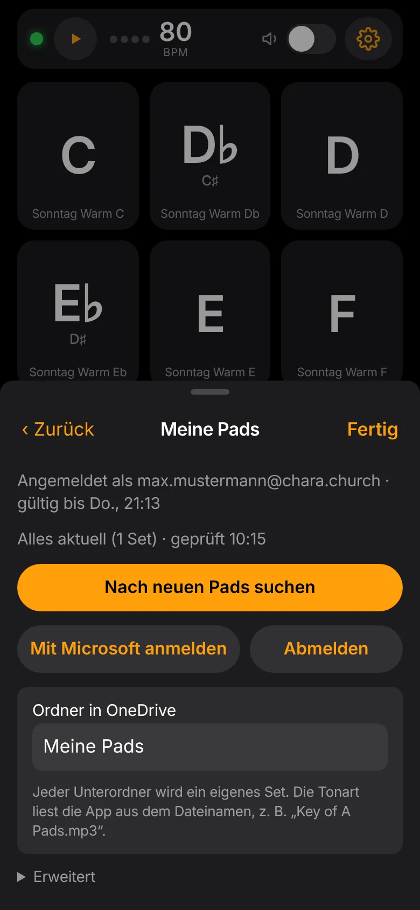
Anpassen
Aussehen & Reihenfolge
Symbole der Sets
⚙︎ → Sets & Anordnung, ganz unten. Für Team-Sets und eigene Sets wählst du jeweils eines von 8 Symbolen. Es erscheint in der Farbe des jeweiligen Sets.
Dazu stellst du die Anzeige ein: Beides, Nur Symbol oder Nur Name. Mit „Nur Symbol“ passen die meisten Sets in die Leiste.
Kacheln und Sets sortieren
Kacheln & Sets anordnen antippen. Alles wackelt jetzt:
- Kacheln und Set-Knöpfe an die gewünschte Stelle ziehen
- × entfernt ein Set vom Gerät
- Quintenzirkel ordnet die Kacheln nach Quinten, ↺ Zurücksetzen wieder chromatisch
- Mit Fertig beenden
Das Pedal folgt der Reihenfolge der Kacheln. Mit dem Quintenzirkel springt „nächste Tonart“ also C → G → D …
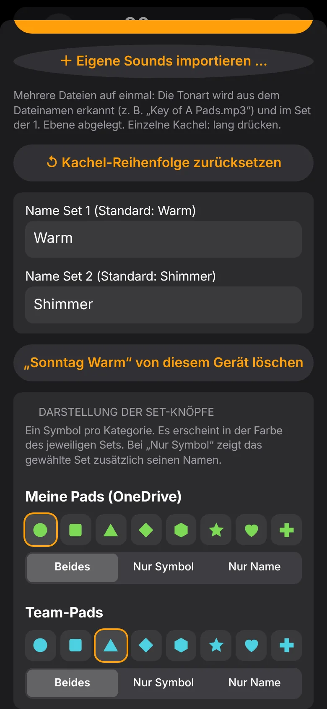
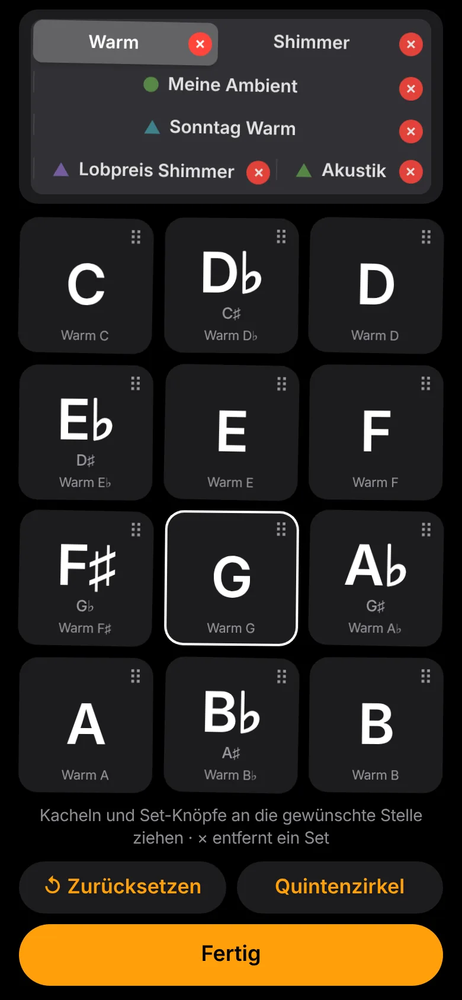
Für Verantwortliche Team
Pads im Team-Ordner bereitstellen
Neue Team-Sets legst du direkt in SharePoint an. Die App holt sie dort ab.
Ort
SharePoint Gemeinschaft Chara e.V. → Dokumente → General → Dienstbereiche → Lobpreis → 02_Worship Pads
Aufbau
| Ebene | Beispiel | Bedeutung |
|---|---|---|
| Unterordner | 02_Worship Pads/Sonntag Warm | Ein Set, der Ordnername ist der Set-Name in der App |
| Datei | Key of C Pads.mp3 … Key of B Pads.mp3 | Eine Datei pro Tonart, bis zu 12. Die Tonart muss im Namen stehen. |
- Format: MP3 ist am besten (klein, schnell). WAV geht auch, ist aber etwa zehnmal größer.
- Länge: beliebig. Die App spielt aus langen Dateien einen etwa 2½-minütigen Ausschnitt als nahtlose Schleife.
- Datei ersetzen: Unter demselben Namen hochladen genügt. Beim nächsten Start bekommen alle das Update angeboten.
- Set umbenennen oder löschen: wirkt bei allen. Ein gelöschter Ordner verschwindet auch auf den Geräten.
Lege nur Pads ab, die die Gemeinde im Team nutzen darf, also selbst erstellte, freie oder mit Team-Lizenz gekaufte. Einzellizenzen gehören in den eigenen OneDrive-Ordner „Meine Pads“.
Live
Tipps für den Gottesdienst
| Wann | Was |
|---|---|
| Am Vortag | App öffnen, „Start“ tippen und Updates laden. Die Sets für den Gottesdienst kurz anspielen. |
| Vor dem Soundcheck | Akku laden. Nicht stören bzw. Fokus einschalten, damit keine Anrufe oder Nachrichten dazwischenfunken. Lautstärke am Gerät hoch und den Pegel am Mischpult einstellen. |
| Ausgabe | Klinken- oder USB-C-Kabel ins Mischpult ist am zuverlässigsten. Bluetooth-Lautsprecher funktionieren, haben aber etwas Verzögerung. |
| Während des Gottesdienstes | Die App muss im Vordergrund bleiben. Wechselst du die App oder sperrst das Gerät, verstummt das Pad. Die App hält das Display selbst wach. |
| Ohne Internet | Geladene Pads spielen auch im Flugmodus (Bluetooth fürs Pedal bleibt an). |
⚙︎ → 🎚 Übergänge & Klang: Dauer für Tonartwechsel, Einblenden und Fade Out. Gut zum Start: Wechsel 3–6 s, Fade Out 4–8 s.
Hilfe
Wenn etwas nicht klappt
| Problem | Lösung |
|---|---|
| Kein Ton | „🔊 Start“ antippen, Lautstärke hoch, Bluetooth-Verbindungen prüfen, Regler in der App prüfen. |
| „Team-Ordner nicht erreichbar“ | Mit vorname.nachname@chara.church angemeldet? Öffnet sich der Ordner „02_Worship Pads“ im Browser? Wenn nicht, fehlt die Berechtigung. Melde dich dann bei der Lobpreisleitung. |
| „Anmeldung abgelaufen“ | Normal nach 24 Stunden. Einfach erneut durchsuchen und anmelden. Die Pads auf dem Gerät sind davon nicht betroffen. |
| Microsoft fragt nach „Administratorgenehmigung“ | Bitte der Lobpreisleitung melden. Das ist eine einmalige Freigabe in der Gemeinde-IT. |
| Pedal reagiert nicht | Ist das Pedal in den iOS-Einstellungen unter Bluetooth verbunden? Steht es im Pfeiltasten-Modus? „Pedal lernen“ wiederholen. |
| Alte Version / neue Funktion fehlt | ⚙︎ → ⓘ App & Speicher → App aktualisieren. Die Versionsnummer steht dort. |
| Planning Center: Anmeldung schlägt fehl | Fehlermeldung als Screenshot an die Lobpreisleitung schicken. Meist liegt es an der Registrierung der App bei Planning Center. |
| Setlist zeigt alte Lieder | Leiste antippen → ↻ Aktualisieren. |
| Zwei Pedale reagieren gleich | Pedal 2 sendet dieselben Tasten wie Pedal 1. An Pedal 2 einen anderen Modus wählen und „Pedal 2 lernen“ wiederholen. |
| Klick hinkt hinterher | Über Bluetooth ist das normal. Für den Klick ein Kabel verwenden (Split). |
| Speicher voll | Nicht benötigte Sets über „Anordnen“ → × entfernen. MP3 statt WAV verwenden. |
Viel Freude beim Spielen! 🎹